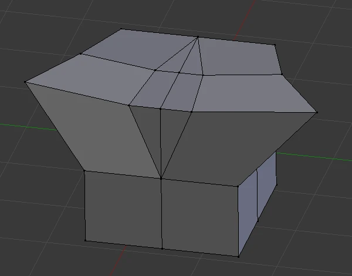
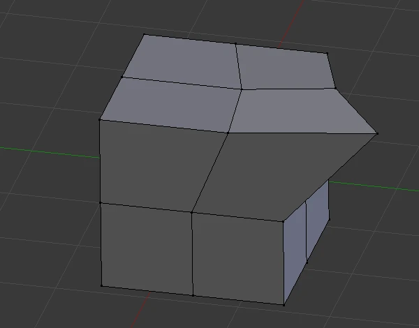

Seat
Dimensions X / Y / Z:
0.225 / 0.45 / 0.04 m
Location X / Y / Z:
0.1125 / 0 / 0.43 m
The source spans X = 0 to +0.225. Mirror will make its width 0.45 m.
Product & Prop Modeling · Two 45-minute sessions · Grades 7–12
Make a measured chair for your modular room. Build four source pieces on the right, reflect them across the center, and soften the edges so light reveals the form.
Finish line: one chair, 0.45 m wide × 0.45 m deep × 0.90 m tall, saved as a reusable collection in 03-chair.blend.

Plan
Measure before you model
Use this starter brief: X = width, Y = depth, Z = height. The floor is Z = 0, the chair faces −Y, and its back is at +Y. The seat top is Z = 0.45 m and the back top is Z = 0.90 m. These are practice dimensions, not a fit standard for every person.
Sketch front and side views. Label overall 0.45 × 0.45 × 0.90 m, seat thickness 0.04 m, and seat top 0.45 m. Measure a nearby chair and note one difference.
Save any open work, then File → New → General. In the 3D Viewport, Object Mode, press A, then X and confirm to remove the starter objects. In Properties → Scene → Units, choose Metric, Unit Scale 1, Length Meters. Use Object → Snap → Cursor to World Origin. All new cubes start there.
File → Save As: create a folder you can find again and save 03-chair.blend. Type units such as 0.45 m directly into numeric fields. Directions below follow the Blender 4.5 Manual; menu search F3 helps locate a named command if your layout differs.
Hover the 3D Viewport before shortcuts; Tab changes the mode there. Verify Metric and Unit Scale 1 before entering dimensions. Changing the unit display alone does not resize existing geometry. Re-enter the dimensions from the next section if necessary.
Block out
Four source boxes
DO: For each card, return to Object Mode, use Add → Mesh → Cube, press F2 to name it, then open Sidebar (N) → Item → Transform. Enter Dimensions first, then Location. Leave Rotation at 0°. Finish each cube with Object → Apply → Scale; all three Scale fields should read 1. These locations describe box centers before the origin changes.
Dimensions X / Y / Z:
0.225 / 0.45 / 0.04 m
Location X / Y / Z:
0.1125 / 0 / 0.43 m
The source spans X = 0 to +0.225. Mirror will make its width 0.45 m.
Dimensions X / Y / Z:
0.225 / 0.04 / 0.45 m
Location X / Y / Z:
0.1125 / 0.205 / 0.675 m
Its bottom meets the seat top; its rear face aligns with the seat's rear edge.
Dimensions X / Y / Z:
0.05 / 0.05 / 0.41 m
Location X / Y / Z:
0.175 / −0.175 / 0.205 m
One complete leg, inset from the seat edge. Mirror creates its partner.
Dimensions X / Y / Z:
0.05 / 0.05 / 0.41 m
Location X / Y / Z:
0.175 / +0.175 / 0.205 m
The two source legs have equal heights and different Y locations.
Select Seat only. Use View → Local View → Toggle Local View, then View → Viewpoint → Left. This looks from −X toward the face lying at X = 0.
Press Tab for Edit Mode, click Face Select in the viewport header (or top-row 3), and turn X-Ray off. Use Select → None, then click the single rectangular face facing you. Press X → Only Faces. Keep its boundary edges and vertices.
Orbit: Seat is an open-ended five-face box. Return to Object Mode and toggle Local View off. Repeat for Backrest. Keep all six faces on both legs: neither leg touches the mirror plane.
Undo once. Isolate one object, use Left view, Face Select, X-Ray off, and deselect all before clicking one face. Choose Only Faces, not Vertices. The selected face must be the center-facing end, not the outer end at X = +0.225.
Save after checking the two open center faces. Keep working in this file. At this stage two halves are deliberately open; Mirror closes the evaluated seat and back in the next section.
Mirror
Reflection as a design rule
For our unrotated objects, X Mirror reflects across the YZ plane at X = 0: (x, y, z) becomes (−x, y, z). It uses the object's origin and local axes unless a Mirror Object is assigned. Our shared origin will be the floor center.
Object Mode: reset the cursor with Object → Snap → Cursor to World Origin. Select the four meshes and use Object → Set Origin → Origin to 3D Cursor. Geometry stays in place; each origin and Location is now (0, 0, 0). Do not re-enter the earlier box-center locations after this.
Select only Seat. Open Properties → Modifiers (wrench) → Add Modifier, search Mirror, and add it. Enable X only; leave Y, Z, and Bisect off and Mirror Object empty. Enable Merge with distance 0.001 m and Clipping. Repeat for Backrest, Legs_Front, and Legs_Rear.
In Object Mode, Seat's evaluated Dimensions should read 0.45 × 0.45 × 0.04 m. Its editable source is still only 0.225 m wide. Each mirrored leg object has an overall X bounding width of 0.40 m, including the gap; each individual leg remains 0.05 m wide. Do not type the source dimensions over these evaluated dimensions.
Select Legs_Front, enter Edit Mode, select all its source vertices, then G X 0.01 Enter. Both front legs move outward symmetrically. Undo once and return to Object Mode. Four mesh objects now display a seat, a back, and four legs.
Clipping holds center vertices on the plane during Edit Mode movement. Merge joins mirrored vertex pairs within its distance threshold. Neither removes arbitrary overlapping boxes or internal faces. Removing the two center caps in the previous section prevents duplicate faces inside the seat and back.

Reference: Mirror modifier, axes, Merge, and Clipping.
Save when the chair has four feet, matching halves, and the correct evaluated width. Keep Mirror live so later edits remain symmetric.
Shade
Light reveals the edge
Small edge bevels produce highlights that help us read a manufactured shape. A large bevel can make the same chair look soft or toy-like. This is an appearance study; the model does not demonstrate a safe load-bearing joint.
On each mesh, Properties → Modifiers → Add Modifier, search Bevel. Keep it below Mirror. Set Affect to Edges, Width Type to Offset, Amount/Width to 0.003 m, Segments to 3, and Limit Method to Angle, 30°. Leave Clamp Overlap on. A merged flat center seam should not receive a bevel.
Orbit close in Solid shading. Toggle Bevel's viewport monitor icon off and on. Identify a new strip of geometry around an outside corner. Return it to on. Three millimeters is 7.5% of the seat's 40 mm thickness; calculate what 12 mm would be before trying it briefly and restoring 3 mm.
For each mesh in Object Mode, use Object → Shade Auto Smooth. In Blender 4.5 this adds Smooth by Angle at the end of the stack. Set its Angle to 30°. The core stack is Mirror → Bevel → Smooth by Angle. No Subdivision modifier is needed for this box-built chair.
References: Bevel settings, Apply Scale, and shading and Smooth by Angle.
Handoff
A reusable asset
Object Mode: deselect everything, snap the cursor to world origin, then Add → Empty → Plain Axes. Rename it Chair_Root. Its Location and Rotation are 0; its Scale is 1.
Select the four chair meshes in the viewport, then Shift-select Chair_Root last so it is active. Press Ctrl+P → Object (Keep Transform). In the Outliner, expanding Chair_Root should reveal Seat, Backrest, Legs_Front, and Legs_Rear beneath it.
Select all five objects in Object Mode and press M → New Collection; name it exactly Chair and confirm. Keep the live modifiers. A collection organizes the asset; Chair_Root provides the shared transform.
Select only Chair_Root; move it 1 m along X. Every chair part should follow. Undo, so the root returns to (0, 0, 0). Save 03-chair.blend, then File → Revert and confirm to reopen the saved version. Check that the Chair collection and live modifiers are still there.
In the room file, use File → Append → 03-chair.blend → Collection → Chair → Append. Select Chair_Root to position the chair. Its feet start at Z = 0, its seat top is 0.45 m, its total height is 0.90 m, and its back faces +Y. Save the room as its own file.
Undo the move. Select the missing mesh in Object Mode, then Shift-select Chair_Root last and repeat Object (Keep Transform). Test again before saving. If several objects move too far, select only the root for the move; do not transform both the parent and its children together.
After saving the core chair, use Save As to make 03-chair-study.blend. Pick one change: raise the back's top by 0.10 m in Edit Mode while keeping its bottom at 0.45 m, or compare 1 / 3 / 6 mm bevels under the same view and light. Record the changed variable, an unchanged constraint, and which version communicates your intended material better. Keep 03-chair.blend as the standard room asset.
Check
Explain with evidence
Definition of done